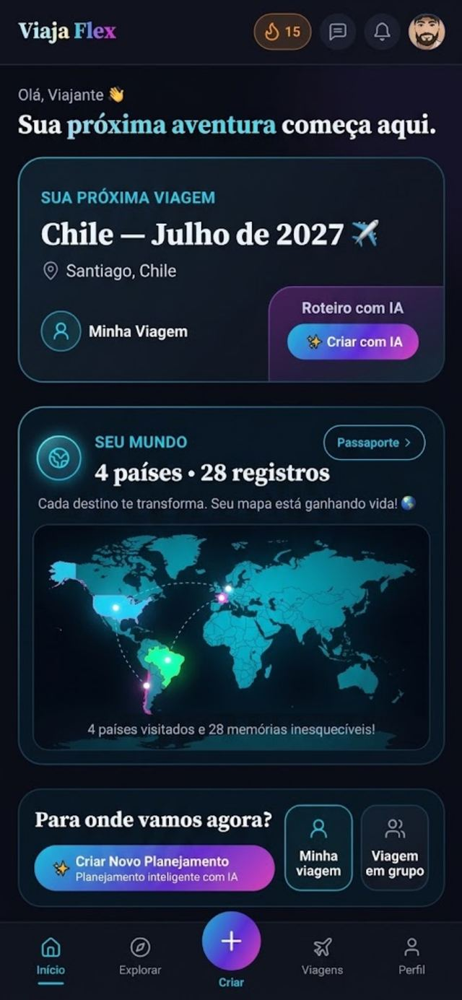
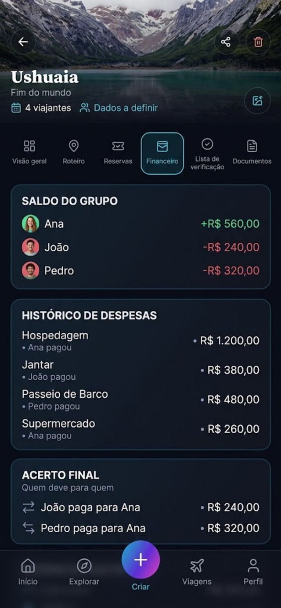
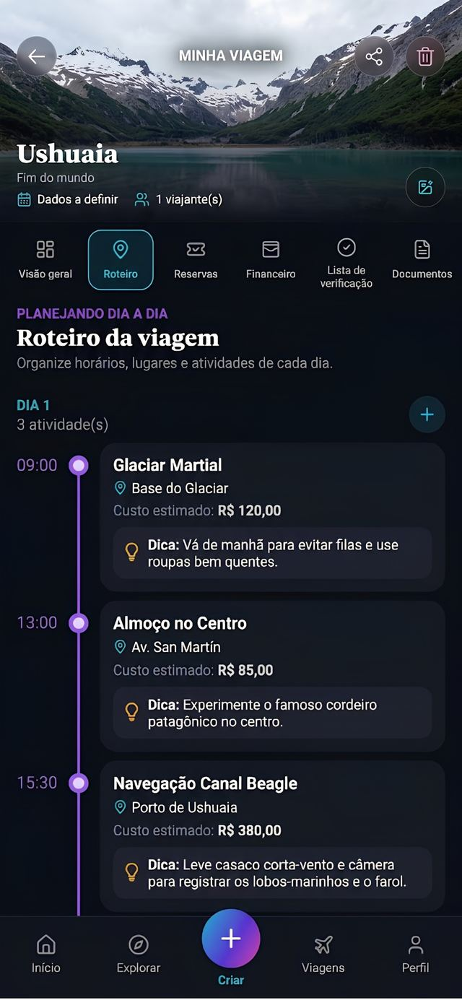
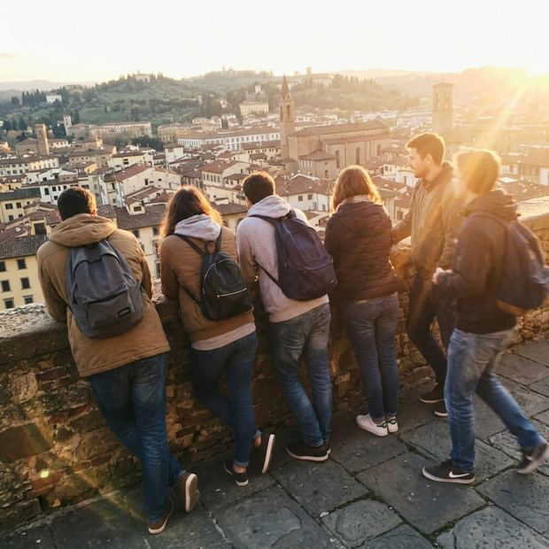
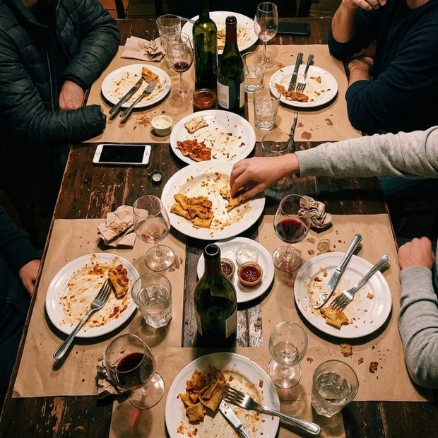
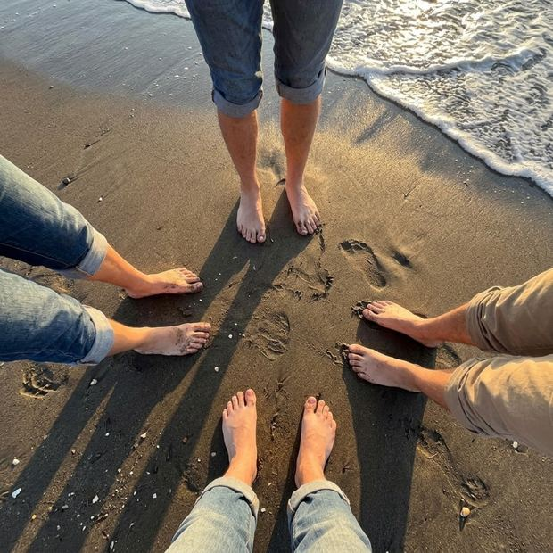
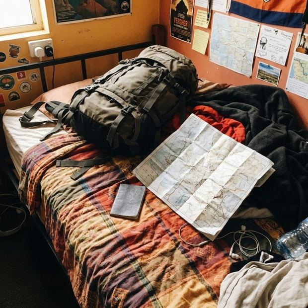

Custo por pessoa, em tempo real
Adicionou um hotel mais caro? O número sobe na hora. Cortou um dia? Desce. Ninguém mais fecha a viagem sem saber o tamanho da conta.
O Thiago não falou que a experiência do teste era pra ser pelo computador? Vira homem e acalma o coração. Acessa o mesmo link pelo PC depois e me diz o que achou.
viajaflex · planejador
Planejador de viagem em grupo
O ViajaFlex organiza o roteiro, divide as despesas, calcula quanto cada um vai gastar e ainda te ensina o inglês do seu destino. Grátis, e todo mundo do grupo entra junto.
Sem cartão. Sem plano. Em 40 segundos você já convida o grupo.

Tudo da viagem num lugar só.
Sem número inflado e sem promessa. Estas são as telas do app, do jeito que ele funciona.


O filme de sempre
Alguém joga um link de hotel no grupo. Três pessoas respondem “amei”. Duas somem. Uma manda um áudio de quatro minutos.
Duas semanas depois ninguém sabe se o hotel foi reservado, quanto vai custar por pessoa, quem ia cuidar do carro, e o roteiro que alguém montou se perdeu entre 600 mensagens.
Aí chega a véspera: metade do grupo não sabe o que levar. Alguém esqueceu o adaptador de tomada. O documento do seguro está num e-mail que ninguém acha.
E quando a viagem acaba, começa a pior parte: o acerto de contas. Dezoito transferências cruzadas, uma planilha que só uma pessoa entende, e aquele silêncio desconfortável com quem ainda não pagou.
O problema nunca foi a viagem.
Foi a falta de um lugar só pra ela.
A virada
Você cria a viagem, define destino e data, e convida o grupo. A partir daí roteiro, dinheiro, decisões, fotos e documentos ficam no mesmo lugar — e todos veem a versão atualizada, sem ninguém precisar perguntar nada.
E cada pessoa tem um papel de verdade. Quem tem papel, cuida. Quem não tem, só reclama.
Cuida do dinheiro do grupo
Lança os gastos, acompanha o orçamento e fecha as contas no fim. O grupo inteiro vê o mesmo número.
Monta o roteiro dia a dia
Define o que o grupo faz em cada dia, com horário, lugar e custo. Nada mais fica no “a gente decide lá”.
Reúne as memórias
Puxa o álbum colaborativo e garante que as fotos de todo mundo caiam no mesmo lugar.
Caça o melhor preço
Pesquisa hotel, passagem e passeio, e registra no app o que achou — com o preço real.
Resolve o deslocamento
Aluguel de carro, trajeto, combustível, estacionamento. Lança tudo como despesa dividida.
Destrava o idioma
Puxa as frases do destino, as aulas da semana e resolve quando o grupo trava no balcão.
Como funciona
Destino, data e quem vai. Trinta segundos.
Manda o link. Seu amigo abre e já vê o roteiro inteiro, sem criar conta. Ele cadastra só quando quiser participar — então ninguém fica de fora por preguiça.
Roteiro, despesas, decisões, bagagem, inglês. Cada um faz sua parte e todo mundo acompanha.
O recurso que acaba com a briga
Qualquer um do grupo lança um gasto e marca quem participou. O jantar que só quatro foram? Só os quatro entram na conta. A gasolina dividida por todos? Dividida por todos.
No fim da viagem, o app não te entrega uma planilha. Ele te entrega a resposta.
E se alguém pagou em dólar, euro ou peso, o app converte na cotação do dia. Você não precisa fazer conta de cabeça, cansado, num restaurante, com o garçom esperando.
É o recurso que faz o grupo inteiro baixar o app. Porque ninguém, nunca, aceita ficar de fora do acerto de contas.
Está tudo quitado.
O dinheiro antes de gastar
A pergunta que todo grupo faz e ninguém consegue responder: quanto vai sair por pessoa? O ViajaFlex responde em tempo real, enquanto vocês montam o roteiro.
Adicionou um hotel mais caro? O número sobe na hora. Cortou um dia? Desce. Ninguém mais fecha a viagem sem saber o tamanho da conta.
Você estima antes, lança durante, e o app mostra a diferença enquanto ainda dá tempo de frear.
Quanto custa o trecho em dinheiro, quanto custa em milhas, e se vale a pena trocar. Sem fórum, sem planilha de outra pessoa.
Cofrinho e metas do grupo
Cada um registra quanto já guardou. E aí acontece uma coisa engraçada: ver que três amigos já estão na frente te faz guardar também. A viagem deixa de ser conversa e passa a ter data de entrada.
Decisão em grupo
Qual hotel em Lisboa?
Clique pra votar. 9 pessoas no grupo.
A véspera e a viagem
Faltam para Lisboa
A ansiedade boa, a que faz você abrir o app sem motivo.
A lista vem pronta pelo destino e pela época, e dá pra dividir quem leva o quê. Ninguém leva três do mesmo e ninguém esquece o único que faltava.
Sem internet, sem chip, sem pânico. As frases que você precisa no aeroporto, no hotel, no táxi, no hospital — com áudio, funcionando no modo avião.
A parte que surpreende
Curso genérico não te ajuda a pedir a conta em Lisboa, perguntar do portão em Orlando ou explicar uma alergia num restaurante em Nova York. Aqui o inglês é do seu destino e da sua situação.
A conta, por favor.
ver em inglêsCould I have the check, please?
ouvir o áudioQual é o portão do meu voo?
ver em inglêsWhich gate is my flight?
ouvir o áudioTenho alergia a amendoim.
ver em inglêsI'm allergic to peanuts.
ouvir o áudioO café da manhã está incluso?
ver em inglêsIs breakfast included?
ouvir o áudioPode parar aqui, por favor.
ver em inglêsYou can stop here, please.
ouvir o áudioTem em outro tamanho?
ver em inglêsDo you have this in another size?
ouvir o áudioE o tema não é chutado: sai dos destinos mais planejados dentro do app. Se essa semana tem 340 grupos indo pra Orlando, a aula é inglês pra Orlando.
Aeroporto, hotel, restaurante, Uber, compras, emergência. Você acha em dez segundos o que precisa pra hoje.
Você está no dia 3, jantar em Lisboa, e ali mesmo: aula de 6 minutos sobre pedir comida e a conta. O conteúdo chega na hora da necessidade.
Faltam 40 dias. Quinze minutos por dia e você chega preparado. Curso sem data você abandona. Com data de embarque, não.
Com ranking interno e aquela cobrança saudável: o Pedro está devendo a lição de casa.
Você manda a pergunta durante a semana, a aula responde as mais votadas. Com o seu nome.
Depois da viagem




Todo mundo joga foto no mesmo lugar. Ninguém precisa pedir “manda as fotos” três semanas depois e receber duas.
No fim da viagem o app monta um vídeo vertical com suas fotos, o mapa do trajeto, os dias e os números. Pronto pra postar. Você não edita nada.
Os países que você já foi, contados, num mapa que é seu. É o troféu de quem viaja.
Um ano depois: faz um ano da viagem a Salvador. Com o recap, as fotos, e o botão de planejar a próxima.
Descoberta
A pior parte de planejar é a tela vazia. “Sete dias em Buenos Aires” e nenhuma ideia de onde começar.
Quanto custa jantar em Buenos Aires, Uber em Santiago, diária em Gramado. Não é estimativa de site: é o que as pessoas lançaram como gasto real. É a informação que o Google não tem.
Achou um roteiro de 7 dias que te agradou? Copia pro seu grupo e ajusta do seu jeito. Dias de pesquisa resolvidos num clique.
A dica fica colada no restaurante, no hotel, na atração — e aparece quando você põe aquele lugar no roteiro. Uma dica boa de 2026 continua ajudando em 2029.
Lisboa: 340 grupos planejando agora. Com os roteiros, as dicas e os preços médios de quem está indo.
Os destinos que você quer conhecer, com estimativa de custo e melhor época. Sonhar organizado.
Você quer ir pra Patagônia. A janela boa abre em dois meses. A informação chega sozinha.
Quando o seu roteiro ficar bom, publique. Link bonito pra mandar no grupo e postar no story. Dá orgulho.
Progresso e comunidade
Desafio da semana. Aprender dez frases. Montar um roteiro de três dias. Responder a dúvida de alguém. Coisas pequenas, progresso visível.
Seu perfil de viajante. O app entende se você é do tipo econômico, conforto, aventura, família ou gastronômico — pelo que você faz, não por formulário. E recomenda o que faz sentido pra você, não pra média.
E o que vem depois. Status, níveis e Travel Points trocáveis por benefícios de viagem estão no caminho. A gente só não quis lançar ponto antes de ter o que trocar por ele.
Quem usou
A gente foi em oito pessoas pra Buenos Aires. No fim eu digitei “fechar contas” e o app disse exatamente quem devia o que. Levou um segundo. No ano anterior eu passei três semanas atrás de R$ 170.
O que me pegou foi a aula de inglês aparecer dentro do meu roteiro. Eu ia jantar em Lisboa e tinha uma aula de seis minutos ali, sobre pedir comida. Assisti no Uber.
Meu grupo nunca baixa nada. Esse eles baixaram, porque ninguém queria ficar de fora da divisão das contas.
Depoimentos de referência. Nenhum vai ao ar antes de existir de verdade.
Objeções
Se a sua não está aqui, ela provavelmente tem a mesma resposta: é grátis e não pede cartão.
Grátis de verdade. Criar viagem, montar roteiro, dividir despesas, convidar o grupo, álbum de fotos — isso é gratuito e vai continuar sendo. A gente cobra por conteúdo: a aula ao vivo toda semana, o acervo completo de inglês, a trilha com prazo. Só se você quiser.
Eles não precisam. O convite abre o roteiro inteiro no navegador, sem conta. E quando chega a parte da divisão de despesas, eles baixam — porque ninguém fica de fora do acerto de contas.
Serve. Roteiro, orçamento, checklist, preços reais, lista de desejos e o inglês do destino funcionam igual pra um. O grupo é opcional.
Então você já sabe o problema: a planilha é sua, não do grupo. Ninguém mais atualiza, ninguém mais entende, e ela não calcula quem deve a quem nem converte moeda.
Não. Monta a lista de desejos, vê quanto custaria, define a meta e começa a guardar. A maioria das viagens começa assim — sem data.
O app registra o que você lançar como despesa do grupo. Não conecta conta bancária, não acessa cartão, não movimenta dinheiro. A transferência final cada um faz do jeito que já faz.
Cria a viagem. Convida o grupo. Deixa o roteiro, o dinheiro e as decisões num lugar só. É grátis, não pede cartão, e em quarenta segundos você já mandou o link pro grupo.
Grátis pra sempre no essencial. Sem cartão, sem teste, sem pegadinha.